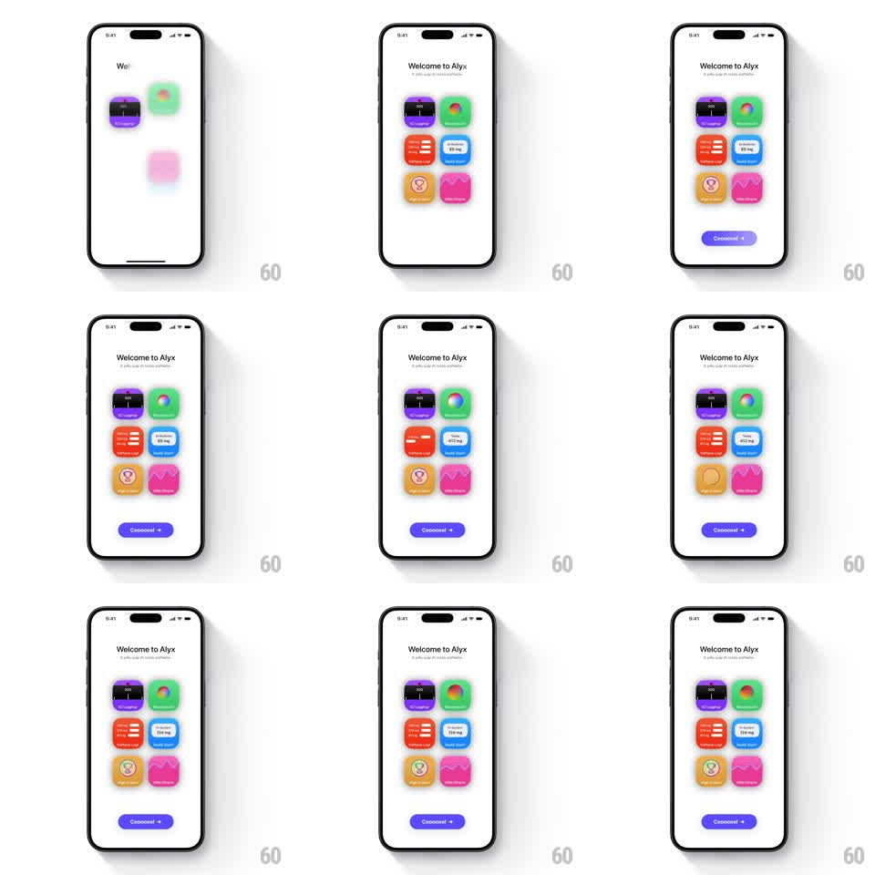

Media
Frame-by-frame

Rebuild this animation 1:1: Alyx's welcome screen - six colorful value-prop cards fade in and unblur in a stagger, then each card runs its own tiny loop (a rotating aura ring, a drawing mood graph), with a purple "Coooool ->" button below.

Rebuild this animation 1:1: Alyx's welcome screen - six colorful value-prop cards fade in and unblur in a stagger, then each card runs its own tiny loop (a rotating aura ring, a drawing mood graph), with a purple "Coooool ->" button below.
## Integration
Integration: stack-agnostic spec - springs given as stiffness/damping, timed motions as duration + curve; map every value to your framework and animation library of choice.
## Scene
Alyx intro, white: "Welcome to Alyx" + subcopy; a 2x3 grid of rounded cards - purple streak counter, green aura ring, red checklist, blue dose chip, gold medal, pink mood graph - and a wide purple "Coooool ->" button near the bottom.
## Motion spec
Pattern: staggered unblur grid entrance with per-card micro-loops.
- Title and subcopy fade up first (translateY 10 -> 0, 300ms).
- Cards enter in reading order, 90ms apart: each goes from blur 12px + opacity 0 + scale 0.92 to sharp, full, 1 over 350ms (ease-out) - a focus pull, not a bounce.
- Once landed, each card runs its own ambient loop: the aura ring rotates slowly (8s per turn), the mood graph line draws itself over 1.2s and holds then redraws, the checklist's items tick on one by one, the streak counter's flame flickers (scale 1 -> 1.06, 500ms), the medal glints (highlight sweep every 3s), the dose chip's value pulses once every 4s.
- The button fades up last (250ms) and its arrow nudges right every 2s (translateX 0 -> 4 -> 0, 400ms).
## Calibration
- Cards are saturated but flat - the depth comes from the blur entrance, not shadows.
- The micro-loops are asynchronous - no two cards hit their beat on the same frame.
## Reduced motion
Cards fade in staggered (200ms each); loops disabled; button static.
## Don't miss
- The unblur must resolve fully - cards end tack sharp at opacity 1.
- The button's playful label ("Coooool ->") is part of the voice - keep it.